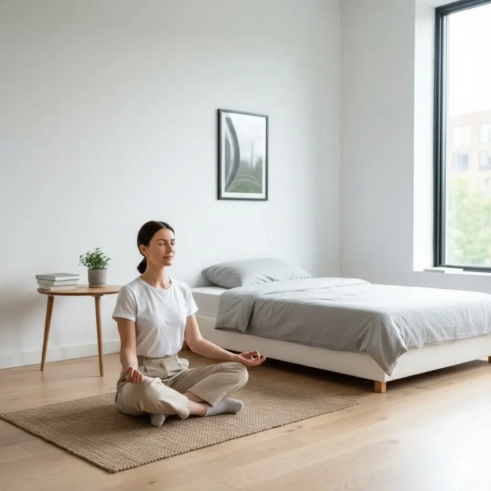
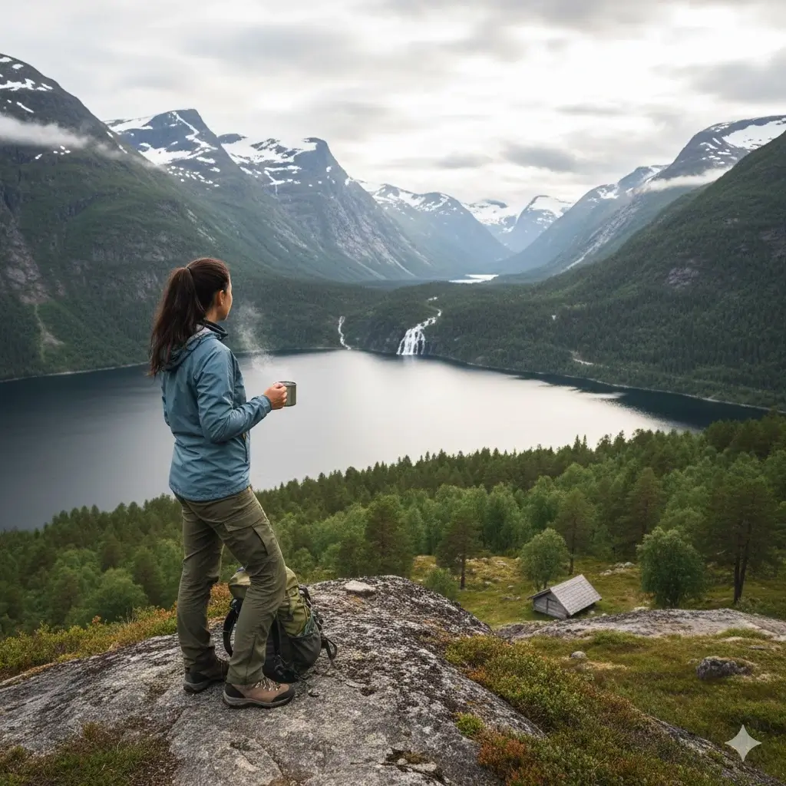

Web Design
Creating modern portfolios and business websites using HTML/CSS/JAVASCRIPT.
Creating modern portfolios and business websites using HTML/CSS/JAVASCRIPT.
High-quality edits for social media platform, featuring seamless transitions and custom Intro/Outros.
Expert photo retouching and graphic design services using Canva and Photoshop.
SEO-optimized and compelling scripts tailored for social media & website's growth.
Take our interactive quiz to test your talent and learn new things.
Hygge शब्दले डेनिश जीवनशैली र दर्शनको प्रतिनिधित्व गर्दछ, जसले मानिसलाई आफ्नो दैनिक जीवनमा सन्तुष्टि, शान्ति, र मानसिक आराम खोज्न प्रेरित गर्छ। आधुनिक जीवनशैलीमा जहाँ मानिसहरू प्रायः व्यस्त, तनावग्रस्त र डिजिटल संसारको चपेटामा हुन्छन्, ...
सहज र सन्तुष्ट जीवनशैलीले जीवनका साना, साधारण तर मूल्यवान क्षणहरूमा खुशी खोज्न सिकाउँछ। यसको मुख्य अवधारणा यो हो कि वास्तविक खुशी महँगो वा विलासी वस्तुमा होइन, बरु सानो र साधारण अनुभव, व्यक्तिगत सम्बन्ध, र वर्तमान क्षणको पूर्ण अनुभवमा छ।
उदाहरणका लागि, जाडोको मौसममा न्यानो कम्बल ओढेर तातो चिया वा कफी पिउँदै मनपर्ने किताब पढ्नु, घरको आगोको अगाडि बस्नु, वा परिवार र साथीहरूसँग मैनबत्तीको मधुरो प्रकाशमा रमाइलो समय बिताउनु जस्ता क्रियाकलापहरूले दैनिक जीवनमा शान्ति र आनन्द ल्याउँछ।
सहज र सन्तुष्ट जीवनशैली अपनाउने व्यक्तिहरू प्रायः आराम, सन्तोष, र मानसिक शान्तिमा बढी ध्यान दिन्छन्। तिनीहरूले आफ्नो घरलाई यस्तो वातावरण बनाउँछन् जहाँ प्रकाश, तापमान, र सजावट सहज र मनोहर हुन्छ। उदाहरणका लागि, हल्का मैनबत्तीको प्रकाश, नरम कुशन र कम्बल, र प्राकृतिक रंगको प्रयोगले घरमा आरामदायी वातावरण सिर्जना गर्छ। खाना र पेयमा पनि साधारण तर गुणस्तरीय चीजहरू रोजिन्छ, जस्तै तातो चिया वा कफी, घरमा बनाएको खाना, र सिजनल फलफूल।

न्यूनतम जीवनशैली एक आधुनिक जीवनशैली हो जुन अनावश्यक भौतिक वस्तुहरूलाई कम गरेर महत्त्वपूर्ण कुराहरूमा ध्यान केन्द्रित गर्ने सिद्धान्तमा आधारित छ। यस जीवनशैलीको मूल उद्देश्य केवल वस्तुहरूको कमी होइन, बरु मानसिक, आर्थिक, र भावनात्मक स्वतन्त्रता प्राप्त गर्नु हो। ...
आधुनिक समाजमा जहाँ उपभोगवाद, सामाजिक दबाब, र भौतिक सम्पत्ति महत्वपूर्ण मानिन्छ, न्यूनतम जीवनशैलीले मानिसलाई जीवनको वास्तविक अर्थ र खुशीको खोजी गर्न प्रेरित गर्छ। यस जीवनशैलीमा मानिसले केवल आवश्यक वस्तुहरू राख्छ, समय, ऊर्जा, र स्रोतहरूलाई महत्वपूर्ण अनुभव र सम्बन्धहरूमा लगाउँछ। न्यूनतम जीवनशैलीले सिकाउँछ कि धेरै सामान वा विलासिताले जीवनलाई पूर्ण बनाउँदैन; बरु सन्तुलन, सरलता, र स्पष्टता जीवनलाई अर्थपूर्ण बनाउँछ। न्यूनतम जीवनशैली अपनाउँदा व्यक्ति आफ्नो जीवनका अनावश्यक पक्षहरू हटाएर मानसिक स्पष्टता प्राप्त गर्छ। अनावश्यक वस्तु, अत्यधिक जानकारी, वा डिजिटल सामग्रीले मानिसको मस्तिष्कलाई थकित र व्यस्त बनाउँछ। यसले मानसिक तनाव कम गर्छ, ध्यान केन्द्रित गर्ने क्षमता बढाउँछ, र जीवनलाई सरल र सन्तुलित बनाउँछ।
न्यूनतम जीवनशैलीले सम्बन्ध र सामाजिक जीवनमा पनि सकारात्मक प्रभाव पार्छ। जब व्यक्ति वस्तु, डिजिटल सामग्री, र अनावश्यक गतिविधिबाट मुक्त हुन्छ, तब उसले आफ्ना परिवार, साथी, र समुदायसँग बढी समय र ध्यान लगाउन सक्षम हुन्छ। यसले सम्बन्धलाई बलियो बनाउँछ र मानिसलाई सामाजिक रूपमा सन्तुष्ट र पूर्ण बनाउँछ।

प्रकृतिसँग नजिकको जीवनशैली भन्ने नर्वेली अवधारणा जसको शाब्दिक अर्थ "खुला हावाको जीवन" हो, जीवनको एक गहिरो दर्शनलाई प्रतिनिधित्व गर्दछ जसले मानिसलाई प्राकृतिक वातावरणसँग प्रत्यक्ष सम्पर्कमा रहन र बाहिर समय बिताउन प्रेरित गर्छ। ...
आधुनिक जीवनशैलीमा जहाँ प्रायः मानिसहरू शहरी, व्यस्त, र डिजिटल जीवनको चपेटामा छन्, प्रकृतिसँग नजिकको जीवनशैलीले हामीलाई प्राकृतिक परिवेशसँग जडित हुन, शारीरिक र मानसिक स्वास्थ्य सुधार गर्न, र जीवनलाई अधिक सरल र सन्तुष्ट बनाउने अवसर दिन्छ। यस जीवनशैलीको आधार विचार यो हो कि मानिस प्रकृतिको भाग हो, र प्रकृतिसँगको नजिक सम्बन्धले जीवनमा स्थिरता, मानसिक शान्ति, र खुशी ल्याउँछ। प्रकृतिसँग नजिकको जीवनशैली केवल खेल वा व्यायाम मात्र होइन, बरु यो दैनिक जीवनको एक अविभाज्य हिस्सा हो, जसले मानिसलाई प्राकृतिक वातावरणसँग सम्पर्कमा राख्छ। यसले मानिसलाई हाइकिङ, क्याम्पिङ, पैदल यात्रा, जंगल भ्रमण, ताल नजिक समय बिताउने, वा केवल खुल्ला हावामा बस्ने जस्ता क्रियाकलापहरूमा संलग्न हुन प्रोत्साहित गर्छ।
प्रकृतिसँग नजिकको जीवनशैलीले शारीरिक स्वास्थ्य मात्र नभई मानसिक स्वास्थ्यमा पनि महत्वपूर्ण भूमिका खेल्दछ। प्राकृतिक परिवेशमा समय बिताउँदा मानसिक तनाव घट्छ, चिन्ता र डिप्रेसन कम हुन्छ, र मानिसको भावनात्मक स्थिरता बढ्छ। प्राकृतिक ध्वनि, हरियाली, र खुला आकाशले मानसिक शान्ति र ध्यान केन्द्रित गर्न मद्दत पुर्याउँछ, जसले मानिसलाई दैनिक जीवनका तनावपूर्ण परिस्थितिहरूबाट राहत दिलाउँछ। यसले मानिसलाई परिवार, साथी, र समुदायसँग घनिष्ठ सम्बन्ध बनाउन प्रेरित गर्छ। प्राकृतिक वातावरणमा समूहमा गतिविधि गर्दा, जस्तै हाइकिङ, व्यक्तिहरूबीच सहकार्य, विश्वास, र साझेदारी बढ्छ। यसले परिवारसँग समय बिताउन, सम्बन्ध बलियो बनाउन सहयोग पुर्याउँछ।